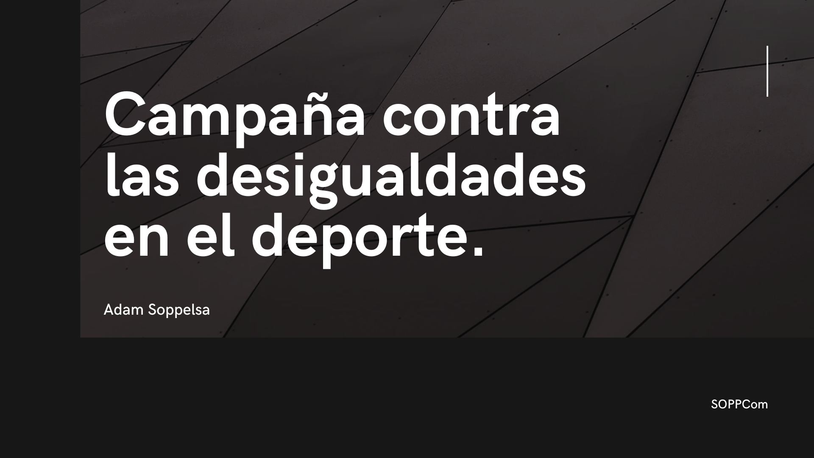
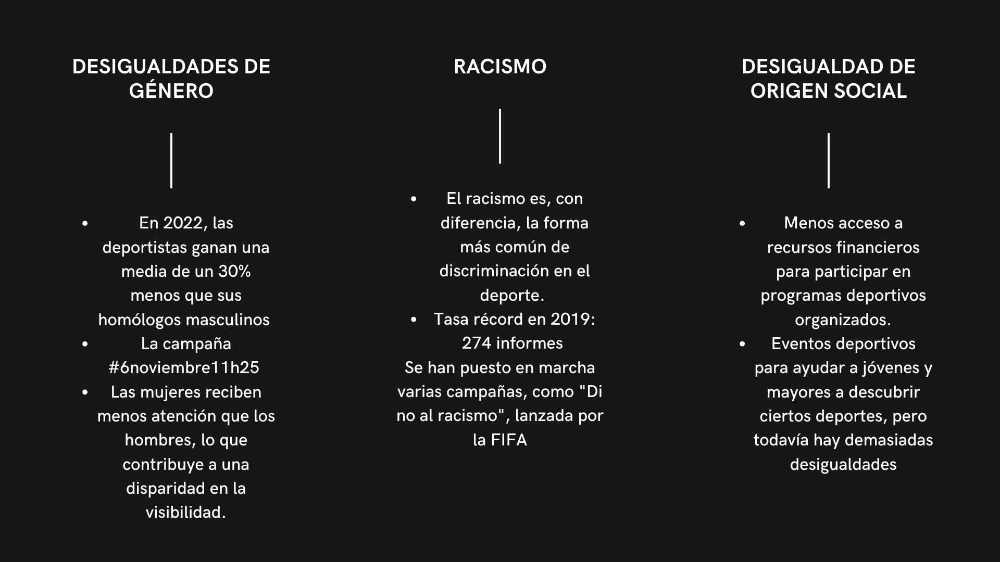
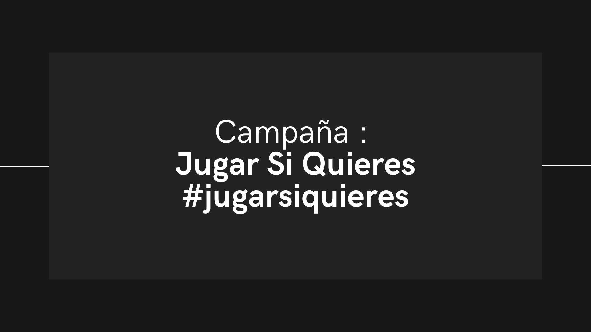
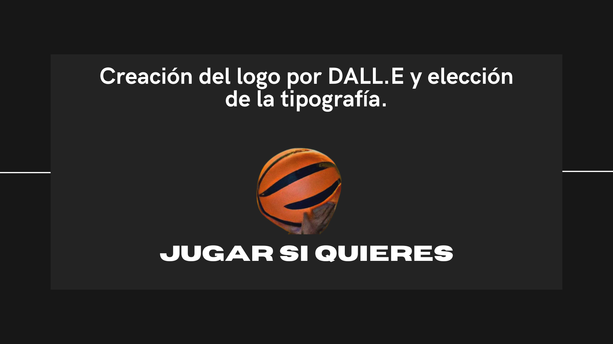
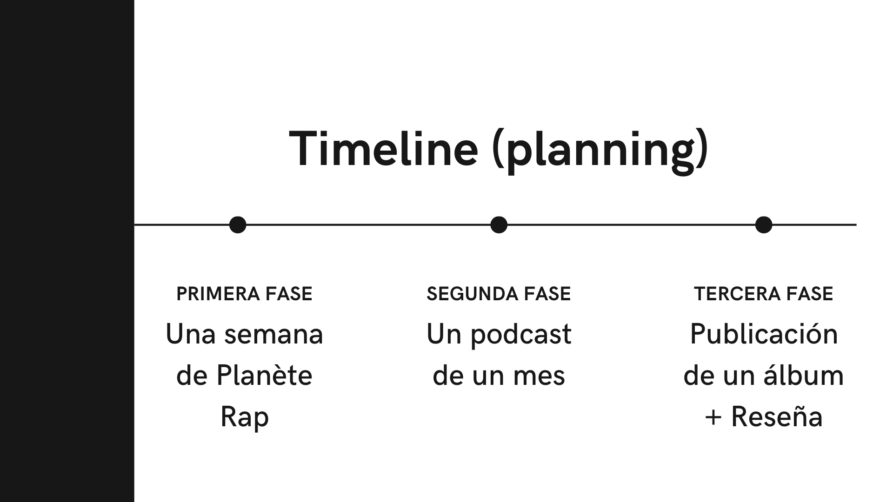
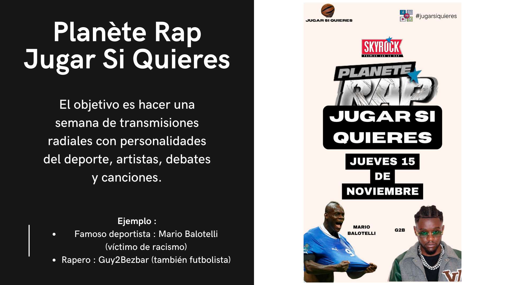
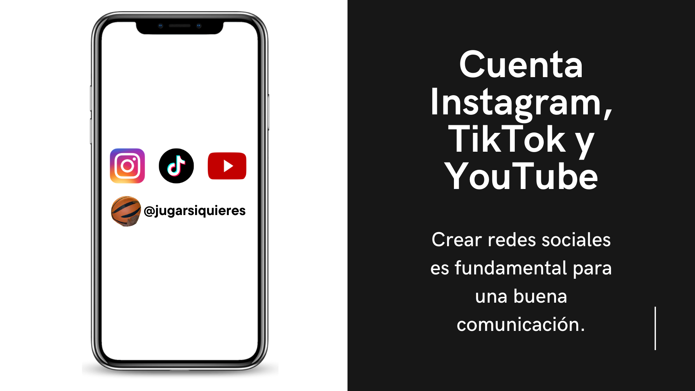
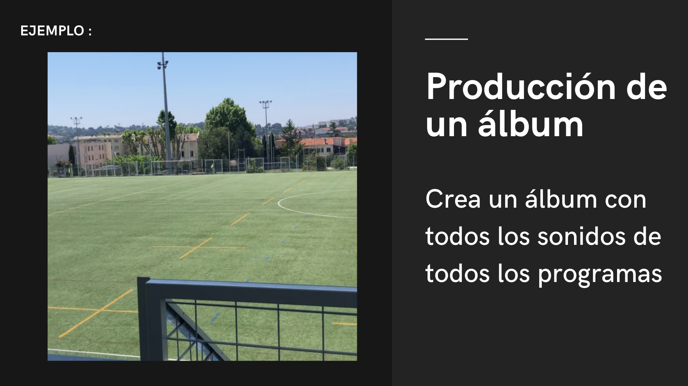
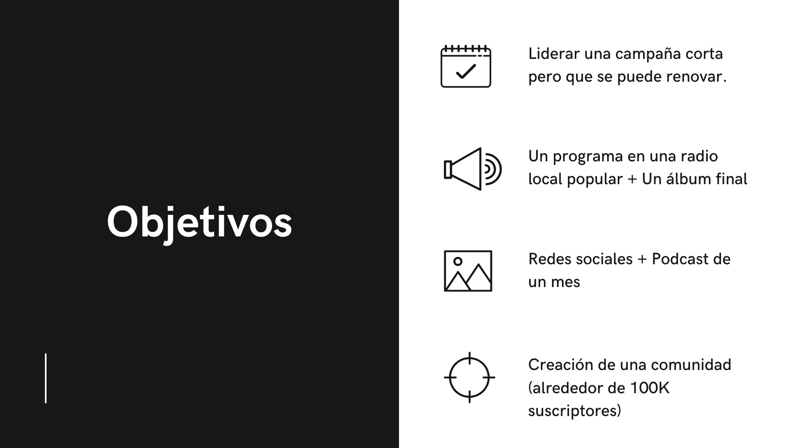
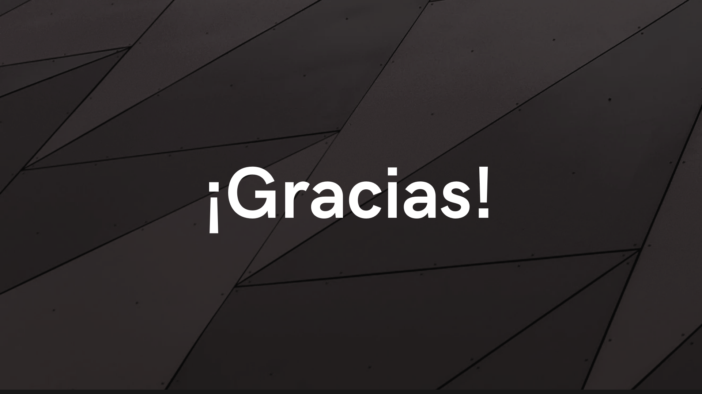

#JugarSiQuieres
À travers la création de la campagne sur les réseaux sociaux #JugarSiQuieres, il était important de montrer l'envie de défendre des minorités souvent discriminées dans le sport. Pour cela, j'ai utilisé mes facultés de musiciens pour créer une émission sur une semaine qui parlerait de cela, ainsi qu'un album de musique.
Compétences développées :
- Compétences de communication et sensibilisation : Création d'une campagne sur les réseaux sociaux démontrant une capacité à concevoir un message engageant et inclusif, utiliser les plateformes numériques pour promouvoir des causes sociales et sensibiliser à la discrimination dans le sport.
- Compétences artistiques et musicales : Conception d'un contenu média original, capacité de storytelling et de narration et compétences en production médiatique.
- Compétences sociales et éthiques : Engagement pour la défense des minorités : pensée critique sur les enjeux de discrimination, empathie et solidarité et capacité à donner une voix aux communautés marginalisées.
- Compétences transversales : Créativité dans la communication, interdisciplinarité (musique, médias sociaux, activisme) et capacité à mobiliser différents supports pour un message unique.
Ce projet illustre parfaitement la capacité à transformer un engagement personnel en un projet artistique et social puissant, démontrant que la créativité peut être un formidable levier de changement et de sensibilisation.
Visualisez ou téléchargez le PDF complet en cliquant dessus.
         